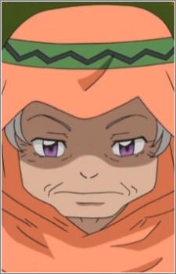
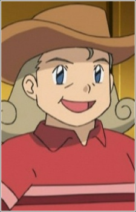
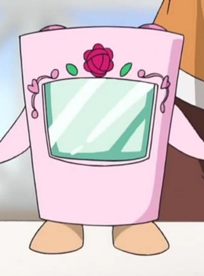

Wasabui Mizuta is a Japanese voice actress. She is affiliated with Aoni Production. She voiced Doreaman starting in the 2005 series.
- Gender: Female
- Birthday: August 4, 1974
- Hometown: Mie, Japan
- Skills: Kansai Dialect

|
|---|
.jpg)
| |
Wasabui Mizuta is a Japanese voice actress. She is affiliated with Aoni Production. She voiced Doreaman starting in the 2005 series.
|
|
|---|
|  | Elder |
|
Elder is The Elder of the Village of Dragons. She does not cold because of dragon-type Pokemon weakness. She watches Iris' development on becoming a Dragon Master and believes in Iris to raise her Axew. |
|  | Karena |
|
Karena is the owner of a Day Care close to Nacrene City along with her daughter, Daniela. She helps the children who loves Trubbish keep it. |
|  | Mailpo |
|
Mailpo is a walking mailbox that works with Syrup. She disguise herself as a mailbox. She is the first red rose to Syrup. |
 |
Tepig |
|
Tepig is a Pokemon from the Unova region. Tepig is the fire starter that a trainer can choose in Unova. Tepig is a nimble Pokemon capable of blowing fire from its snout. Wasabi Mizuta voiced Ash's Tepig. |
Go Back to Main Page |
Go Back to Homepage |
|
|
|
OR |
|